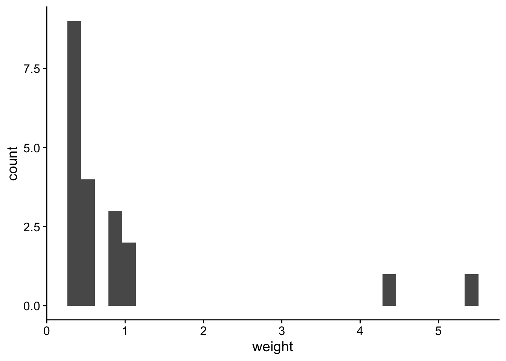
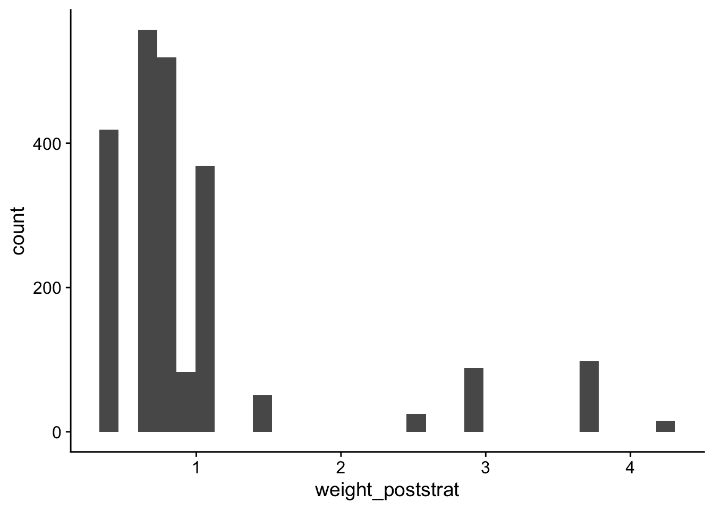
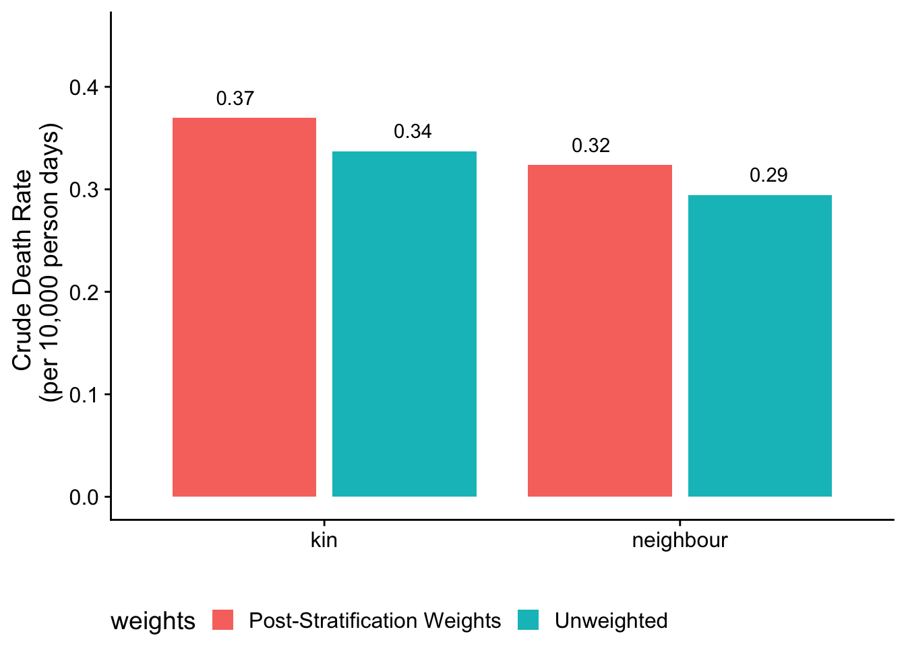
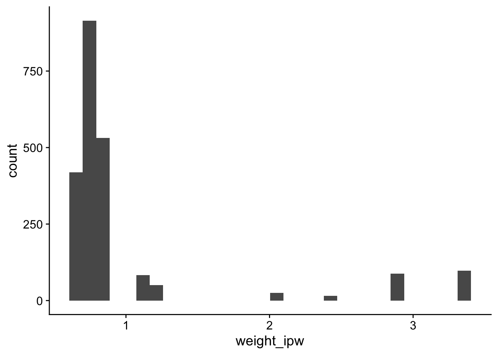
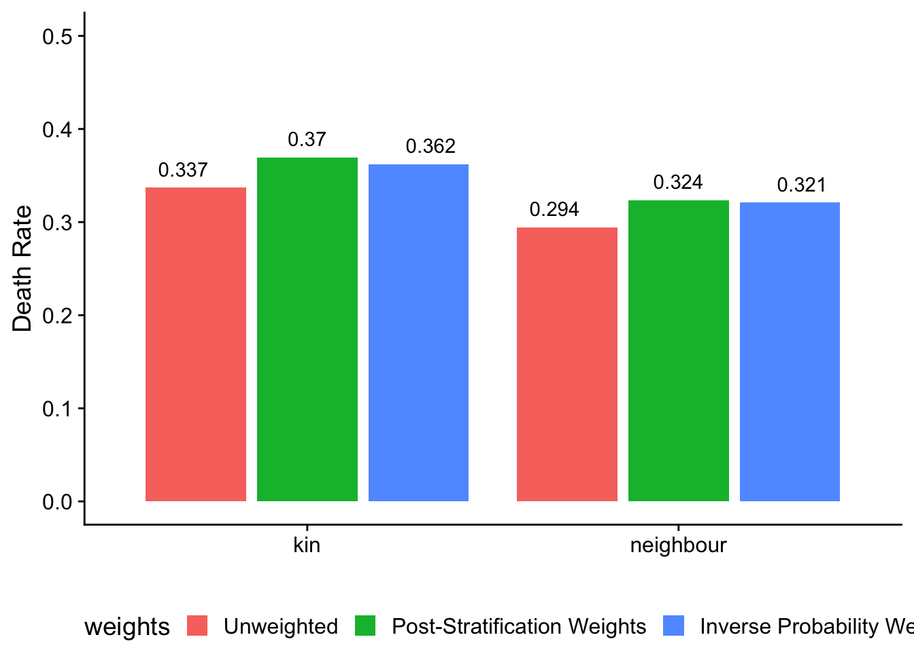
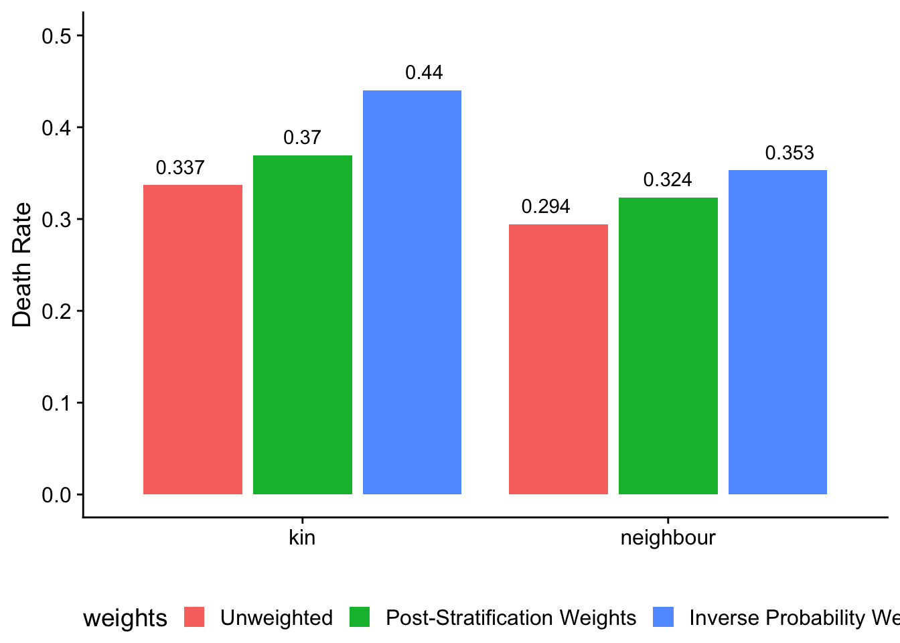

## library packages
library(tidyverse)
library(cowplot)Topics in Computational Social Science - Lab 3
Lab 3: Non-probability sampling
In this lab, we will explore different statistical methods for adjusting non-probability samples to improve their representativeness and better estimate population-level statistics.
Non-probability sampling is increasingly common approach to data collection. While probability sampling is generally recommended whenever possible, sometimes logistical or financial challenges preclude collecting a probability sample. In some cases, the only feasible approach for reaching certain populations is through a non-probability sample (e.g., hard-to-reach populations). For an overview of non-probability sampling in the social sciences, see:
Baker, Reg, J. Michael Brick, Nancy A. Bates, Mike Battaglia, Mick P. Couper, Jill A. Dever, Krista J. Gile, and Roger Tourangeau. 2013. ‘Summary Report of the AAPOR Task Force on Non-Probability Sampling’. Journal of Survey Statistics and Methodology 1(2):90–143. doi: 10.1093/jssam/smt008.
Kennedy, Andrew Mercer, Arnold Lau and Courtney. 2018. ‘For Weighting Online Opt-In Samples, What Matters Most?’ Pew Research Center. Retrieved 10 February 2025 (https://www.pewresearch.org/methods/2018/01/26/for-weighting-online-opt-in-samples-what-matters-most/).
In the first exercise, we will use simulated data and construct post-stratification weights. This will help us understand the role of weighting adjustments in improving the representativeness of non-probability samples. In the second exercise, we will estimate crude death rates using a non-probability sample.
Exercise 1
In this exercise, we’ll construct post-stratification weights for a simulated convenience sample. A post-stratification weight is a type of survey weight (a value assigned to each respondent in a survey to adjust for unequal probabilities of selection). The big-picture goal of constructing survey weights is to adjust the sample so that it more accurately represents the target population. This is particularly important in non-probability samples, where certain groups may be over- or underrepresented due to selection biases.
There are lots of different approaches to generating survey weights. The ‘right’ weighting strategy depends on the availability of auxiliary data, the survey design, and the specific biases you aim to correct. Ideally, the chosen weighting strategy should improve representativeness by aligning the sample with known population characteristics — while minimizing variance and other distortions in estimates.
This (hypothetical) convenience sample was taken at a coffee shop with the goa of better understanding average daily coffee consumption among adults. Respondents were asked about their age, income, and daily coffee consumption in cups.
To help construct the post-stratification weights, we’ve also obtained auxiliary city-level data on proportion of people aged 18+ in each age X income group (“cell”). We will use this auxiliary data to construct the post-stratification weights.
First, we’ll load in our data:
## read in sample data
coffee_shop_sample <- data.frame(
id = 1:20,
age_group = c("50+","50+","30-49",
"50+","18-29","18-29","18-29","30-49","18-29","18-29",
"18-29","18-29","50+","30-49","18-29","50+",
"50+","30-49","18-29","18-29"),
income_group = c("High","Middle","High",
"High","Middle","Low","Middle","High","Middle",
"High","Low","High","Middle","Low","Middle","High",
"Middle","Middle","High","Low"),
coffee_consumption = c(2.7,1.2,2.8,4.2,4.9,
2.6,2.7,1.2,3.5,2.4,3.5,3.7,4,2.4,3.5,1.3,2.2,
2.1,0.6,3))We’ll also load our auxiliary data from the city on the true proportion of people in each group.
## read in auxiliary population proportions
pop_proportion <- data.frame(
pop_proportion = c(0.12, 0.2, 0.08, 0.1, 0.25, 0.05, 0.05, 0.1, 0.05),
age_group = c("18-29",
"30-49","50+","18-29","30-49","50+","18-29",
"30-49","50+"),
income_group = c("Low","Low",
"Low","Middle","Middle","Middle","High",
"High","High"))Constructing post-stratification weights
Post-stratification weighting is a statistical re-weighting approach used to correct for differences between a sample and the population of interest. Specifically, the sample is split into mutually exclusive groups (“cells”) based on characteristics (e.g., age, gender, and income). The respondents in each cell have an inclusion probability equal to the ratio of the sample proportion to the population proportion.
The weight for each group is then calculated as the inverse of this inclusion probability; this ensures that underrepresented groups receive higher weights while overrepresented groups receive lower ones.
\[ \text{Inclusion Probability}_{\text{cell}} = \frac{\text{Sample Proportion}_{\text{cell}}}{\text{Population Proportion}_{\text{cell}}} \]
\[ \text{Weight}_{\text{cell}} = \frac{1}{\text{Inclusion Probability}_{\text{cell}}} = \frac{\text{Population Proportion}_{\text{cell}}}{\text{Sample Proportion}_{\text{cell}}} \] When implementing post-stratification in practice, it’s important that your sample collects the same information as is available in the auxiliary population data (i.e., design your survey instrument in such a way to collect all the data you’ll need to construct survey weights!).
The code below generates post-stratification weights on income and age group.
## calculate sample proportion
sample_proportion <- coffee_shop_sample %>%
count(income_group, age_group) %>%
mutate(sample_proportion = n / sum(n))
## join population proportions together
poststrat_weights <- sample_proportion %>%
inner_join(pop_proportion, by = join_by(age_group, income_group)) %>%
mutate(inclusion_prop = sample_proportion / pop_proportion) %>% ## calculate inclusion probably by cell
mutate(weight = 1 / inclusion_prop) %>% ## calculate weight
select(age_group, income_group, weight)
## normalize weights
poststrat_weights <- poststrat_weights %>%
mutate(weight = weight)Now we’ll join these post-stratification weights back onto our sample. We will also standardize the weights by dividing each weight by the average weight. This standardization step ensures that the average weight is 1, which is helpful when calculating weighted sums and averages.
## add on weights
sample_data_weighted <- coffee_shop_sample %>%
left_join(poststrat_weights, by = c("age_group", "income_group"))
## normalize weights so average weight is 1
sample_data_weighted <- sample_data_weighted %>%
mutate(weight = weight/mean(weight)) Exercise 1 questions
- Make a histogram of the distribution of the weights using
ggplotandgeom_histogram() - Calculate the mean (average) weight. Did our standardization work?
- Compare the weighted and unweighted averaged. Which is larger?
- Do we trust our new weighted estimates of the average number of coffee drinkers? What things might our poststratification weights not be capturing?
Exercise 1 solutions
## 1.1
sample_data_weighted %>%
ggplot() +
geom_histogram(aes(x = weight)) +
theme_cowplot()`stat_bin()` using `bins = 30`. Pick better value with `binwidth`.
## 1.2
sample_data_weighted %>%
summarize(mean(weight)) mean(weight)
1 1## 1.3
sample_data_weighted %>%
summarize(unweighted = mean(coffee_consumption),
weighted = sum(coffee_consumption * weight) / sum(weight)) ## alternatively unweighted weighted
1 2.725 2.506159## 1.4
# Answer: No, We are sampling in a coffee shop—holding constant age and gender, these people are going to drink more coffee on average. Exercise 2
Estimating crude death rates with a non-probability sample
In Exercise 2, we are going to apply a new method for estimating death rates in humanitarian emergencies. This method combines the network survival method with non-probability sampling, the type of sample we might be able to realistically collect in a humanitarian emergency such as a civil war. In such settings, researchers often face significant barriers to collecting probability samples, making non-probability approaches necessary.
The data collected for this exercise come from the Tanganyika Province of the Democratic Republic of the Congo (DRC). The data collection team collected data from major transit and cultural hubs, including taxi stations, ports, markets, and hospitals using a quota sample design. The quotas were established based on gender and geographic region.
In this exercise, we will assess the impact of different weighting strategies on mortality estimates. Specifically, we will apply two different weighting techniques: post-stratification and inverse-probability weighting.
We want to construct weights as we suspect that the people in our non-probability sample systematically differ from those in the general population with respect to mortality in their social networks.
First, we’ll read in all the data in we’ll need for this exercise
## read in our data
quota_sample <- read_csv("../../data/network_survival_quota_sample.csv") Rows: 2224 Columns: 19
── Column specification ────────────────────────────────────────────────────────
Delimiter: ","
chr (11): marital_status, education_level, material_house, cooking_fuel, bed...
dbl (8): num_deaths_neighbours, num_deaths_kin, num_total_neighbour, num_to...
ℹ Use `spec()` to retrieve the full column specification for this data.
ℹ Specify the column types or set `show_col_types = FALSE` to quiet this message.## read in post-stratification weights (update path)
poststrat_weighting_targets <- read_csv("../../data/weighting_targets_poststrat.csv")Rows: 78 Columns: 4
── Column specification ────────────────────────────────────────────────────────
Delimiter: ","
chr (3): gender, age_class, health_zone
dbl (1): population
ℹ Use `spec()` to retrieve the full column specification for this data.
ℹ Specify the column types or set `show_col_types = FALSE` to quiet this message.## probability sample
probability_sample <- read_csv("../../data/network_survival_probability_sample.csv") Rows: 7325 Columns: 20
── Column specification ────────────────────────────────────────────────────────
Delimiter: ","
chr (13): _submission__uuid, gender, age_class, age_u5_count, age_5_18_count...
dbl (7): hh_size, age_u5, age_5_18, age_18plus, modern_fuel_type, manufactu...
ℹ Use `spec()` to retrieve the full column specification for this data.
ℹ Specify the column types or set `show_col_types = FALSE` to quiet this message.Our survey asks respondents to report on two different social networks:
Closest neighbors (top five closest households by walking distance)
Kin (children, siblings, parents, grandparents, grandchildren, aunts/uncles)
For both groups, we have information for each survey respondent about (i) number of people in each group that they are connected to and (ii) number of people in each group that died in the past 120 days.
Network survival
We will estimate a crude death rate expressed as deaths per 10,000 person days. This is the conventional way to express deaths in humanitarian emergencies; it contrasts with the conventional demographic definition of deaths per 1,000 person-years.
To produce an estimate of the crude death rate (our estimand of interest), we use the following estimator:
\[ \widehat{M} = \left( \frac{\sum_{i \in s} w_i~y_{i, D} } {\sum_{i \in s} w_i~d_i~E_{i} } \right) \times 10,000. \]
where
\(y_{i, D}\) is the total number of deaths reported by respondent \(D\)
\(d_i\) is the degree (e.g., number of kin that respondent \(i\) is connected to)
\(E_i\) is the number of days of exposure that respondent \(i\) reported (in this case, 120 days)
\(\sum_{i \in s}\) is the sum over every person \(i\) the sample \(s\)
Let’s focus on kin network as an example. Calculating a death rate requires two components, the number of deaths and the measure of exposure.
Number of deaths: This is simply the weighted total number of kin deaths reported by everyone in the sample.
Eexposure: This is the sum the weighted total number of kin for each person, multiplied by their number of days of exposure.
The crude death rate is then obtained by dividing the total number of deaths by the total exposure and multiplying by 10,000 to express the rate per day. We will compute this separately for the kin and network sample to produce two distinct estimates of the death rate.
We’ll estimate the crude death rates without applying weights:
# Calculate crude death rate sample (using neighbor ties)
quota_sample %>%
filter(!is.na(num_deaths_kin)) %>%
summarize(kin_death_rate_numerator = sum(num_deaths_kin), ## sum up all kin deaths
kin_death_rate_denominator = sum(num_total_kin) * 120) %>% ## sum up all kin and multiply by 120 days of exposure
mutate(death_rate = 10000 * (kin_death_rate_numerator/kin_death_rate_denominator))# A tibble: 1 × 3
kin_death_rate_numerator kin_death_rate_denominator death_rate
<dbl> <dbl> <dbl>
1 240 7114320 0.337# Calculate crude death rate (using neighbor ties)
quota_sample %>%
filter(!is.na(num_deaths_neighbours)) %>%
summarize(neighbour_death_rate_numerator = sum(num_deaths_neighbours), ## sum up all kin deaths
neighbour_death_rate_denominator = sum(num_total_neighbour) * 120) %>% ## sum up all kin and multiply by 120 days of exposure
mutate(death_rate = 10000 * (neighbour_death_rate_numerator/neighbour_death_rate_denominator))# A tibble: 1 × 3
neighbour_death_rate_numerator neighbour_death_rate_denominator death_rate
<dbl> <dbl> <dbl>
1 232 7880760 0.294As we’re going to estimate the crude death rate, let’s write a function to make things simpler. The functions will have a few different arguments, including:
deaths: the column for reported deaths in social networkdegree: the column for reported connections in the social networkweights: the column for weightsexposure daysthe number of days of exposure reported by each person (i.e., how long the mortality report window is in days)
If no weights are supplied, this function will generate unweighted estimates.
## network survival estimator function
network_survival_estimator <- function(data, deaths, degree, weights = NULL, exposure_days = 120) {
## calculate cdr
data %>%
summarise(
death_rate_numerator = sum(if (!is.null(weights)) .data[[weights]] * .data[[deaths]] else .data[[deaths]], na.rm = TRUE),
death_rate_denominator = sum(if (!is.null(weights)) .data[[weights]] * .data[[degree]] else .data[[degree]], na.rm = TRUE) * exposure_days
) %>%
mutate(death_rate = 10000 * (death_rate_numerator / death_rate_denominator))
}Let’s practice applying the function:
## calculate kin crude death rate
kin_estimates <- network_survival_estimator(data = quota_sample,
deaths = "num_deaths_kin",
degree = "num_total_kin",
weights = NULL,
exposure_days = 120) %>%
mutate(tie = "kin")
## calculate neighbor crude death rate
neighbor_estimates <- network_survival_estimator(data = quota_sample,
deaths = "num_deaths_neighbours",
degree = "num_total_neighbour",
weights = NULL,
exposure_days = 120) %>%
mutate(tie = "neighbour")
## calculate crude death rate
cdr_unweighted <- bind_rows(kin_estimates, neighbor_estimates) %>%
mutate(weights = "Unweighted")
cdr_unweighted# A tibble: 2 × 5
death_rate_numerator death_rate_denominator death_rate tie weights
<dbl> <dbl> <dbl> <chr> <chr>
1 240 7117080 0.337 kin Unweighted
2 232 7880760 0.294 neighbour UnweightedPoststratification weights
First, we’ll construct poststratification weights. We’ll use the same general approach as we did in Exercise 1.
## Look at weighting targets
poststrat_weighting_targets# A tibble: 78 × 4
gender age_class health_zone population
<chr> <chr> <chr> <dbl>
1 f [25,35) Kalemie 17886.
2 f [25,35) Nyunzu 13278.
3 f [25,35) Nyemba 22989.
4 f [25,35) Kalemie 15550.
5 f [25,35) Nyunzu 11544.
6 f [25,35) Nyemba 19984.
7 f [35,45) Kalemie 10983.
8 f [35,45) Nyunzu 8154.
9 f [35,45) Nyemba 14116.
10 f [35,45) Kalemie 6676.
# ℹ 68 more rowsLet’s calculate post-stratification weights using the age class and gender.
# Poststratification sample proporitons
poststrat_population <- poststrat_weighting_targets %>%
group_by(age_class, gender) %>%
summarize(n = sum(population), .groups = "drop") %>%
mutate(prop_pop = n / sum(n)) %>%
ungroup()
# Poststratification sample proportions
poststrat_sample <- quota_sample %>%
group_by(age_class, gender) %>%
summarize(n = n(), .groups = "drop") %>%
mutate(prop_sample = n / sum(n)) %>%
ungroup()
# Calculate poststratification weights
poststrat_weights <- poststrat_sample %>%
inner_join(poststrat_population, by = c("age_class", "gender")) %>%
mutate(weight = prop_pop / prop_sample) %>%
dplyr::select(gender, age_class, weight_poststrat = weight)
# Joining the poststratification weights back into survey_df
quota_sample <- quota_sample %>%
left_join(poststrat_weights, by = c("gender", "age_class")) %>%
mutate(weight_poststrat = weight_poststrat / mean(weight_poststrat)) ## normalize weights Now we can visualize the distribution of weights.
## quota sample
quota_sample %>%
ggplot() +
geom_histogram(aes(x = weight_poststrat)) +
theme_cowplot()`stat_bin()` using `bins = 30`. Pick better value with `binwidth`.
The distribution of weights looks reasonable: there are no huge weights. As a general rule of thumb, we don’t want any of weights to be more than 5x larger than our average weight. If there are extreme weights, a common approach is to “trim” the weights — for instance, any weight greater than 5 is assigned a value of 5.
Now we’re read to calculate the weighted estimates. Note that we need to explicitly tell our function what weight column to use.
## kin estimates poststratification
kin_estimates_poststrat <- network_survival_estimator(data = quota_sample,
deaths = "num_deaths_kin",
degree = "num_total_kin",
weights = "weight_poststrat",
exposure_days = 120) %>%
mutate(tie = "kin")
## neighbor estimates poststratification
neighbor_estimates_poststrat <- network_survival_estimator(data = quota_sample,
deaths = "num_deaths_neighbours",
degree = "num_total_neighbour",
weights = "weight_poststrat",
exposure_days = 120) %>%
mutate(tie = "neighbour")
## weights
cdr_poststratification <- bind_rows(kin_estimates_poststrat, neighbor_estimates_poststrat) %>%
mutate(weights = "Post-Stratification Weights")
## print out post-stratification estimates
cdr_poststratification# A tibble: 2 × 5
death_rate_numerator death_rate_denominator death_rate tie weights
<dbl> <dbl> <dbl> <chr> <chr>
1 260. 7041832. 0.370 kin Post-Stratif…
2 249. 7700226. 0.324 neighbour Post-Stratif…We can check whether the new post-stratification weighted estimates are higher than the weighted estimates:
## combine cdr estimates with unweighted estimates
cdr_estimates <- cdr_poststratification %>%
bind_rows(cdr_unweighted)
## cdr estimates
cdr_estimates %>%
ggplot(aes(y = death_rate, x = tie, fill = weights)) +
geom_col(size = 3, position = position_dodge2(.3)) +
theme_cowplot() +
ylim(0, .45) +
theme(legend.position = "bottom") +
labs(x = "",
y = "Crude Death Rate \n (per 10,000 person days)") +
geom_text(aes(y = death_rate + .02, label = round(death_rate, 2)),
position = position_dodge2(1))Warning: Using `size` aesthetic for lines was deprecated in ggplot2 3.4.0.
ℹ Please use `linewidth` instead.
Our post-stratification weights increased our estimates of the crude death rate, but only slightly.
Inverse probability weights
Our post-stratification weights only account for age class and gender. For example, we may suspect that wealthier individuals are more likely to have social networks with lower mortality.
To better adjust for this, we need additional characteristics. The challenge with post-stratification is the “curse of dimensionality” — as the number of stratification variables increases, cells become small, sparse, and produce extremely large weights. Recall our general rule of thumb — we don’t want any of weights to be more than 5x larger than our average weight.
Instead of post-stratification, we’ll use a model-based approach to estimate each respondent’s probability of inclusion in the non-probability sample. Here we have collected an auxiliary probability-based sample to help with the reweighting.
Specifically, we’ll first combine together a probability sample and a non-probability sample. We’ll then fit a logistic regression predicting inclusion probability in the non-probability sample. This model will estimate the likelihood that a given respondent was selected for the quota sample. We will then use the inverse of this probability as a weight.
## read in probability sample
probability_sample <- probability_sample %>%
mutate(inclusion = 0)
## create inclusion variable = 1
quota_sample <- quota_sample %>%
mutate(inclusion = 1)
## pool the sample together
pooled_sample <- bind_rows(probability_sample, quota_sample)
## fit a logistic regression
selection_model <- glm(inclusion ~ gender + age_class, data = pooled_sample, family = "binomial")
## print summary of model
summary(selection_model)
Call:
glm(formula = inclusion ~ gender + age_class, family = "binomial",
data = pooled_sample)
Coefficients:
Estimate Std. Error z value Pr(>|z|)
(Intercept) -2.59115 0.08000 -32.389 < 2e-16 ***
genderm 0.15713 0.05025 3.127 0.00177 **
age_class[25,35) 1.59294 0.08797 18.107 < 2e-16 ***
age_class[35,45) 1.88321 0.08838 21.307 < 2e-16 ***
age_class[45,55) 1.63006 0.09845 16.557 < 2e-16 ***
age_class[55,65) 1.13405 0.12326 9.201 < 2e-16 ***
age_class[65,100] 0.36160 0.18379 1.967 0.04913 *
---
Signif. codes: 0 '***' 0.001 '**' 0.01 '*' 0.05 '.' 0.1 ' ' 1
(Dispersion parameter for binomial family taken to be 1)
Null deviance: 10365.7 on 9548 degrees of freedom
Residual deviance: 9657.5 on 9542 degrees of freedom
AIC: 9671.5
Number of Fisher Scoring iterations: 5## generate ipw weights
inclusion_prob <- predict(object = selection_model, newdata = quota_sample, type = "response")
## quota sample
quota_sample <- quota_sample %>%
mutate(weight_ipw = 1/inclusion_prob) %>%
mutate(weight_ipw = weight_ipw/ mean(weight_ipw)) ## normalize weights Now let’s create a histogram of our IPW weights.
## histogram of weights
quota_sample %>%
ggplot() +
geom_histogram(aes(x = weight_ipw)) +
theme_cowplot()`stat_bin()` using `bins = 30`. Pick better value with `binwidth`.
The distribution of the weights looks reasonable; there’s no extremely large weights. We can now calculate our crude death rate.
## inverse probability weights
kin_estimates_ipw <- network_survival_estimator(data = quota_sample,
deaths = "num_deaths_kin",
degree = "num_total_kin",
weights = "weight_ipw",
exposure_days = 120) %>%
mutate(tie = "kin")
## inverse probability weights
neighbor_estimates_ipw <- network_survival_estimator(data = quota_sample,
deaths = "num_deaths_neighbours",
degree = "num_total_neighbour",
weights = "weight_ipw",
exposure_days = 120) %>%
mutate(tie = "neighbour")
## weights
cdr_ipw <- bind_rows(kin_estimates_ipw, neighbor_estimates_ipw) %>%
mutate(weights = "Inverse Probability Weights")Now we can compare our estimates of the crude death rate using (i) no weights, (ii) poststratification weights, and (iii) inverse probability weights.
## inverse probability weights
cdr_estimates %>%
bind_rows(cdr_ipw) %>%
mutate(weights = factor(weights, levels = c("Unweighted", "Post-Stratification Weights", "Inverse Probability Weights"))) %>% # Reorder weights
ggplot(aes(y = death_rate, x = reorder(tie, -death_rate), fill = weights)) +
geom_col(size = 3, position = position_dodge2(.3)) +
theme_cowplot() +
ylim(0, .5) +
theme(legend.position = "bottom") +
labs(x = "",
y = "Death Rate") +
geom_text(aes(y = death_rate + .02, label = round(death_rate, 3)),
position = position_dodge2(1))
Our estimates are very similar regardless of whether we use post-stratification weights or inverse probability weights. However, we have more covariates in our model that better capture socioeconomic status (SES), which our theoretical intuition tells us may be important…
Exercise 2 questions:
We’re worried that our quota sample is over-representing higher SES individuals, which our weights aren’t properly accounting for. To address this, we’ll incorporate additional covariates into our model estimate inclusion probability.
2.1 Recalculate the inverse probability weights using a new logistic regression model with the following additional predictors: manufactured_material_house, bed, radio, and modern_fuel_type. These covariates measure wealth. Are these predictors statistically significant in our logistic regression model?
2.2 Re-estimate the crude death rate using the new weights (using both kin and neighbor networks). How does your crude death rate change? Make a plot comparing the unweighted estimate, post-stratification estimate, and the new inverse probability weighted estimate.
2.3 Speculate on why our crude death rates change when our inverse probability weights account for socioeconomic status. What does this tell us about the relative risk of death in the social networks of low SES respondents?
Exercise 2 solutions
### 2.1
## construct a generalized linear models
selection_model_ses <- glm(inclusion ~ gender + age_class + manufactured_material_house + bed + radio + modern_fuel_type, data = pooled_sample, family = "binomial")
## print summary of model
summary(selection_model_ses)
Call:
glm(formula = inclusion ~ gender + age_class + manufactured_material_house +
bed + radio + modern_fuel_type, family = "binomial", data = pooled_sample)
Coefficients:
Estimate Std. Error z value Pr(>|z|)
(Intercept) -3.78754 0.09895 -38.279 < 2e-16 ***
genderm 0.12908 0.05348 2.414 0.0158 *
age_class[25,35) 1.59513 0.09090 17.548 < 2e-16 ***
age_class[35,45) 2.00840 0.09204 21.822 < 2e-16 ***
age_class[45,55) 1.67193 0.10268 16.283 < 2e-16 ***
age_class[55,65) 1.19974 0.12874 9.319 < 2e-16 ***
age_class[65,100] 0.48244 0.18951 2.546 0.0109 *
manufactured_material_house 1.28308 0.06001 21.382 < 2e-16 ***
bedyes 0.91080 0.06614 13.772 < 2e-16 ***
radioyes 0.02023 0.06001 0.337 0.7361
modern_fuel_type -0.24853 0.06322 -3.931 8.45e-05 ***
---
Signif. codes: 0 '***' 0.001 '**' 0.01 '*' 0.05 '.' 0.1 ' ' 1
(Dispersion parameter for binomial family taken to be 1)
Null deviance: 10365.7 on 9548 degrees of freedom
Residual deviance: 8697.8 on 9538 degrees of freedom
AIC: 8719.8
Number of Fisher Scoring iterations: 5Yes, all the new SES coefficients are statistically significant besides radio.
### 2.2
## generate ipw weights
inclusion_prob_ses <- predict(object = selection_model_ses, newdata = quota_sample, type = "response")/mean(predict(object = selection_model_ses, newdata = quota_sample, type = "response"))
## quota sample
quota_sample <- quota_sample %>%
mutate(weight_ipw_ses = 1/inclusion_prob_ses)
## inverse probability weights
kin_estimates_ipw <- network_survival_estimator(data = quota_sample,
deaths = "num_deaths_kin",
degree = "num_total_kin",
weights = "weight_ipw_ses",
exposure_days = 120) %>%
mutate(tie = "kin")
## inverse probability weights
neighbor_estimates_ipw <- network_survival_estimator(data = quota_sample,
deaths = "num_deaths_neighbours",
degree = "num_total_neighbour",
weights = "weight_ipw_ses",
exposure_days = 120) %>%
mutate(tie = "neighbour")
## weights
cdr_ipw_ses <- bind_rows(kin_estimates_ipw, neighbor_estimates_ipw) %>%
mutate(weights = "Inverse Probability Weights SES")
## inverse probability weights
cdr_estimates %>%
bind_rows(cdr_ipw_ses) %>%
mutate(weights = factor(weights, levels = c("Unweighted", "Post-Stratification Weights", "Inverse Probability Weights SES"))) %>% # Reorder weights
ggplot(aes(y = death_rate, x = reorder(tie, -death_rate), fill = weights)) +
geom_col(size = 3, position = position_dodge2(.3)) +
theme_cowplot() +
ylim(0, .5) +
theme(legend.position = "bottom") +
labs(x = "",
y = "Death Rate") +
geom_text(aes(y = death_rate + .02, label = round(death_rate, 3)),
position = position_dodge2(1))
Our estimate increases when we adjust for socioeconomic selection.
2.3 Our estimates increase when we adjust for socioeconomic status. This suggests that people with low SES (who were underrepresented in our quota survey) have higher mortality in their social networks.
Bonus exercise
Calculate separate crude death rates for each health zone. Use no weights, post-stratification weights, and inverse probability weights (including SES variables). What health zone has the highest crude death rate?